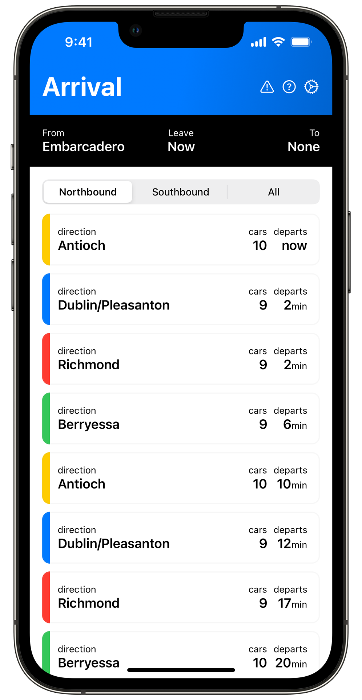

Arrival
The BART app for commuters
A project of Ronan Furuta
Arrival is THE beautiful and clean BART app for commuters. With an interface that is easy and intuitive to use, you get access to real-time train predictions for the station nearest to you from the moment you launch it. This fast experience quickly gets you access to the information you need without excess tapping and visual clutter and allows you to quickly see detailed information (where to transfer, transfer windows, and train colors) for any stop.